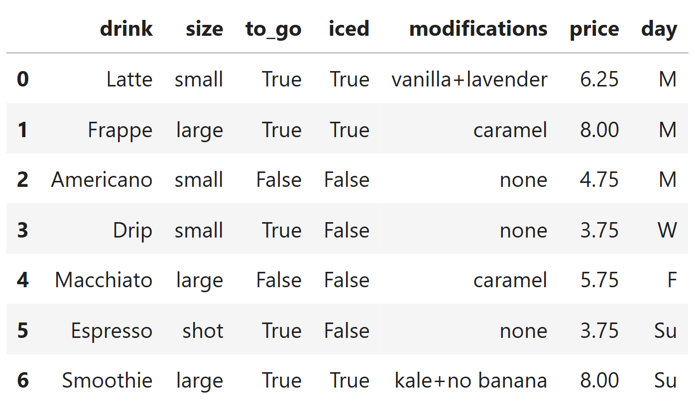
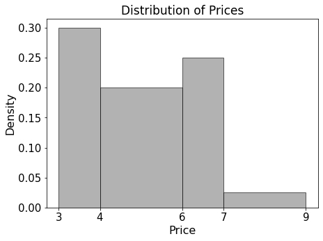

← return to practice.dsc10.com
This quiz was administered in-person. Students were allowed a
double-sided sheet of handwritten notes. Students had 30
minutes to work on the quiz.
This quiz covered Lectures
7-11 of the Winter
2026 offering of DSC 10.
Note (groupby / pandas 2.0): Pandas 2.0+ no longer
silently drops columns that can’t be aggregated after a
groupby, so code written for older pandas may behave
differently or raise errors. In these practice materials we use
.get() to select the column(s) we want after
.groupby(...).mean() (or other aggregations) so that our
solutions run on current pandas. On real exams you will not be penalized
for omitting .get() when the old behavior would have
produced the same answer.
You are hired as a data analyst for your local coffee shop. The
orders DataFrame contains information about drink orders,
where each row corresponds to an individual drink order. The columns are
the type of drink (str); the size of the drink
(str); whether the drink was ordered to_go (bool); whether
the drink was iced (bool); a description of
modifications made to the drink (str); the
price of the drink (float); and the day of the
week on which the drink was purchased (str, with 7 possible values).

If there are zero modifications made to a drink, the entry in the
modifications column will be 'none'.
Otherwise, all modifications will be distinct and separated by a
'+' without any spaces. Complete the function
count_mods, whose input is a single string formatted like
the entries in the modifications column of
orders. The function should return the number of
modifications in the drink order. Then, use the count_mods
function to assign a new column to orders called
num_mods, which describes the number of modifications made
to each drink in orders. For example, the entries of the
num_mods column for rows 0, 1, 2 should be 2, 1, 0,
respectively.
def count_mods(mod):
if ___(a)___:
return 0
else:
return len(___(b)___)
orders = orders.assign(num_mods=___(c)___)(a):
Answer: mod == 'none'
If there are no modifications, the string stored in
modifications is exactly 'none', so we return
0 in that case.
The average score on this problem was 77%.
(b):
Answer: mod.split('+')
When there are modifications, they are distinct pieces separated by
'+' with no spaces. Splitting on '+' gives one
string per modification, so len(...) is the number of
modifications (e.g. "vanilla+lavender" → 2,
"caramel" → 1).
The average score on this problem was 76%.
(c):
Answer:
orders.get('modifications').apply(count_mods)
Apply count_mods to each value in the
modifications column to compute the new column
num_mods for every row.
The average score on this problem was 80%.
In orders, the probability that a latte is iced is 0.6.
The probability that a drink is iced and a latte is
0.18. What is the probability of any order being a latte? (Give your
answer as a number between 0 and 1.)
Answer: 0.3 (or equivalently
3/10).
Let L be the event that a drink is a latte and I that it is iced. The phrase “a latte is iced” means iced given that it is a latte, i.e. P(I \mid L) = 0.6. (The second sentence gives the joint probability P(I \cap L) = 0.18.) Using P(I \cap L) = P(I \mid L)\, P(L),
P(L) = \frac{P(I \cap L)}{P(I \mid L)} = \frac{0.18}{0.6} = 0.3.
The average score on this problem was 74%.
Consider the following code. Without writing any additional
babypandas code, write a Python expression that evaluates
to the probability that a drink has at least one modification.
df = (orders.get(['to_go', 'day', 'num_mods'])
.groupby(['to_go', 'num_mods']).count()
.reset_index())
w = df.get('day').sum()
x = df.get('day').count()
y = df[df.get('num_mods') == 0].get('day').sum()
z = df[df.get('num_mods') == 0].get('day').count()Answer: 1 - y / w (equivalently
(w - y) / w).
After the groupby, each row of df is one
(to_go, num_mods) pair, and the 'day' column
holds the count of orders in that group (same as group
size). So w is the sum of all group sizes, i.e. the
total number of orders. The quantity y is
the sum of group sizes only for groups with num_mods == 0,
i.e. the number of orders with no modifications. Thus
y/w is the probability of zero
modifications, and 1 - y/w is the probability of at
least one modification.
The average score on this problem was 45%.
The distribution of prices in orders is
summarized by the histogram below. If the cafe sold 700 drinks with a
price less than 6 dollars, how many drinks did the cafe
sell in total?

Answer: 1000 drinks.
The histogram is a density histogram, so the area of each bar is the proportion of orders in that price range.
So the proportion with price strictly less than 6 dollars is 0.30 + 0.40 = 0.70.
If 700 drinks correspond to 70% of the data, the total number of drinks is 700 / 0.70 = 1000.
The average score on this problem was 80%.
The cafe wants to know the average price of drinks on each day of the week. Write a Python expression to produce an appropriate bar chart to answer this question.
Answer: One acceptable expression is:
orders.get(['day', 'price']).groupby('day').mean().plot(kind='bar')
Group by day, take the mean of price within
each day (average price per weekday; mean() averages the
numeric price column), then plot a bar chart. A horizontal
bar chart (kind='barh') is also fine if you prefer.
The average score on this problem was 70%.
A new cafe has opened across the street, and it only offers two drink
sizes: 'small' and 'large'. It decides to
compile its own DataFrame of drink orders called drinks,
formatted in the exact same way as orders. In
drinks, there are currently 10 'small' drinks
and 5 'large' drinks. In the orders DataFrame,
suppose that there are 400 'small' drinks. If the output of
the following Python expression is True, how many
'large' drinks are in the orders DataFrame?
Fill in the blank with an integer answer, or bubble in “Not enough
information” if you believe there is insufficient data given to answer
this question.
orders.merge(drinks, on='size').shape[0] == 5000Answer: 200.
orders.merge(drinks, on='size') performs an
inner merge on size. For each size value
that appears in both DataFrames, every
row in orders with that size pairs with
every row in drinks with that size (all
combinations). So:
'small': 400 \times 10 =
4000 rows.'large': if L is
the number of large drinks in orders, there are L \times 5 rows.We need 4000 + 5L = 5000, hence L = 200.
The average score on this problem was 68%.